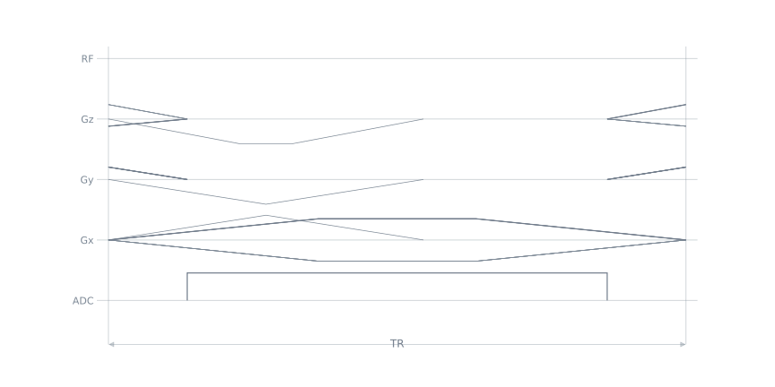
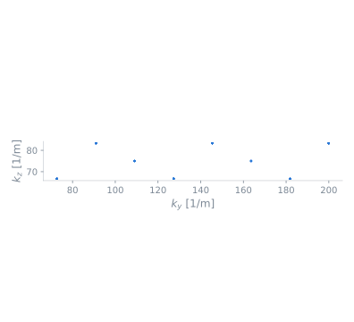

EpiReadout3D#
- class pypulseqpp.sequences.EpiReadout3D[source]#
Bases:
SequenceModuleA slab-selective EPI train, phase-encoded along y and partition-encoded along z.
fovandmatrixtake three values, readout first. The partition axis is blipped line by line, so a whole CAIPI pattern is played inside one train.The caller sets the shot origin by scaling the prewinders. Blips step between the lines of
orderand share the readout ramps; withflybackthey play in the rewind gaps instead. TE is timed to the linete_line(the first by default), because which line samples the centre of k-space depends on the shot origin the caller sets.Navigator lines are read after the read prewinder and before the phase-encode prewinder, without blips, so they sample the centre line at alternating polarities; the train continues the alternation.
- Parameters:
system (pypulseqpp.Opts) – System limits.
rf (RfEvent) – Pulse that opens the repetition; a refocusing pulse gives the readout half of a spin-echo EPI.
gz (GradEvent, default=None) – Selection gradient played with
rf.gz_reph (GradEvent, default=None) – Rephaser of
gz, left-aligned in the first block after the pulse.fov (float or sequence of float) – Field of view per encoded axis, readout first (m).
matrix (int or sequence of int) – Matrix size per encoded axis, readout first.
order (array_like, default=None) – Integer offsets from the shot origin,
(etl,)or(etl, 2), one row per line. When given,etltoextentare ignored;Nonegenerates the train withmake_epi_shot_offsets().etl (int, default=None) – Lines per repetition.
Noneis what one shot ofschemeneeds to cross the phase-encode matrix.scheme ({'linear', 'caipi', 'zigzag'}, default='linear') – Ordering to generate.
'linear'steps bysegments * accelerationevery line within one partition;'caipi'adds the partition sawtooth of blipped-CAIPI;'zigzag'traverses up and down a phase-encode segment instead of across the matrix.acceleration (int, default=1) – Phase-encode undersampling
Ry: the number of lines a blip steps.segments (int, default=1) – Shots
Sthe lattice is interleaved across. The blip becomesS * Ry, which shortens the train.partition_acceleration (int, default=1) – Partition undersampling
Rz, the height of the CAIPI cycle.'caipi'only.caipi_shift (int, default=1) – Partitions the pattern climbs per acquired line.
'caipi'only.extent (int, default=None) – Phase-encode lines one pass spans. Required by
'zigzag'and rejected by the other schemes.te (float, default=None) – Echo time (s), from the RF centre to the echo of line
te_line.Noneis as short as possible. Consecutive echoes areespapart;echo_timeslists them.te_line (float, default=0.0) – Line, counted from zero and possibly fractional, that
teis timed to.tr (float, default=None) – Repetition time (s) of the whole module, including the longest echo shift.
Noneis as short as possible.navigator_lines (int, default=0) – Lines read without blips between the read and phase-encode prewinders, for odd-even phase correction. Rejected with
flyback.echo_shifts (int, default=1) – Number of shots whose trains are delayed by successive multiples of
esp / echo_shifts. The module plays no shift: the caller lengthenswait_shift.oversampling (float, default=1.0) – Readout oversampling: the sample spacing in k-space is
1 / (oversampling * fov).readout_bandwidth_hz (float, default=500000.0) – Requested ADC sampling rate (Hz);
bandwidth_hzis the rate achieved on the ADC and gradient rasters.ramp_sampling (bool, default=True) – Sample across the read ramps as well as the plateau, which shortens the echo spacing. False restricts the window to the plateau.
flyback (bool, default=False) – Read every line in the same direction, rewinding between lines, instead of alternating polarity. Adds a rewind per line and removes the odd-even echo inconsistency of a bipolar train.
spoiling_cycles (float, default=0.0) – Cycles of read-axis dephasing across
voxel_size_mleft at the end of the repetition.voxel_size_m (float, default=None) – Length the spoiling is counted over (m);
Noneis the readout resolution.labels (sequence of str, default=None) – Names of the labels holding the shot origin of each encoded axis, phase encode first: two for a 3D train, one for 2D.
trigger (TriggerEvent or DigitalOutputEvent, default=None) – Event armed on the prewinder block.
- Attributes:
rf (RfEvent) – The excitation.
gz (GradEvent) – Its selection gradient, if one was given.
gz_reph (GradEvent) – Its rephaser, if one was given, left-aligned in whichever block follows the pulse.
gx_pre (TrapEvent) – Read prewinder, half a line lobe against the first line’s polarity, right-aligned in the prewinder block so that it ends where the first line starts.
gx (list of GradEvent) – One read lobe per line: alternating polarity for a blipped train, the same lobe every time for a flyback one.
gx_navigator (list of GradEvent) – One read lobe per navigator line, the first positive; present only with
navigator_lines.gx_flyback (TrapEvent) – The rewind between two lines.
flybackonly.gy_blips, gz_blips (list) – One phase-encode event per line,
etllong, withNonewhere no step is taken. In a blipped train an entry carries the second half of the step into the line and the first half of the step to the next line out of it; in a flyback train it is the whole step, played in the rewind block after that line, so the last entry isNone.gz_blipsis 3D only.gy_pre, gz_pre (TrapEvent) – Phase encodes at their largest step, to be scaled per shot, right-aligned with
gx_pre; withnavigator_linesthey play in a block of their own after the navigator.gz_preis 3D only.gy_rew, gz_rew (TrapEvent) – The negated encodes, left-aligned in the last block of the repetition.
gx_spoil (GradEvent) – Read-axis trapezoid in the last block: returns the read axis from the end of the last line to k = 0 and adds the spoiling.
adc (AdcEvent) – The acquisition window, shared by every line.
shot_labels (tuple of LabelSetEvent) –
SETevents on the prewinder block, one per name inlabels, for the caller to set to the shot origin. Always a tuple, so it can be unpacked into a block.line_labels (tuple of tuple of LabelIncEvent) – Per line, the
INCevents that step from the previous line to this one; empty for the first line, whichshot_labelsplaces.order (numpy.ndarray) – Integer
(etl, 2)(ky, kz)offsets from the shot origin.wait_te (DelayEvent) – Present only when
teexceeds the minimum.wait_shift (DelayEvent) – Echo-shift delay before the first train line, one block raster long; present only with
echo_shiftsabove 1. The caller lengthens it bys * echo_shift_stepon shotsand shortenswait_trby the same amount.wait_tr (DelayEvent) – Present when
trexceeds the minimum, or whenecho_shiftsis above 1, in which case it holds the longest shift.etl (int) – Lines per repetition.
esp (float) – Echo spacing (s).
echo_times (numpy.ndarray) – Echo time of each line (s) from the RF centre, without echo shift.
echo_time (float) – Echo time (s) of line
te_line, the timetespecifies.echo_shift_step (float) – Echo shift between successive shots (s),
esp / echo_shiftson the block raster; zero with one shift.bandwidth_hz (float) – Achieved ADC sampling rate
1 / dwell(Hz).n_samples (int) – ADC samples per line.
delta_kx (float) – K-space sample spacing along the readout (1/m).
blip_span (float) – Duration of one phase-encode step (s), taken from the read ramps.
- Raises:
ValueError – If a count is out of range,
orderis the wrong shape or steps outside the matrix,labelsdoes not name one counter per encoded axis,te_linelies outside the train, a navigator is asked of a flyback train, or the requested TE or TR is shorter than the train can achieve.
Examples
>>> import pypulseqpp.sequences as design >>> import pypulseqpp as pp >>> system = pp.Opts(max_grad=50, grad_unit="mT/m", max_slew=180, slew_unit="T/m/s") >>> slab = design.SpatialSelectiveExcitation(system, 15.0, 0.12, is_slab=True) >>> epi = design.EpiReadout3D( ... system, slab.rf, slab.gz, fov=(0.22, 0.22, 0.12), matrix=(64, 64, 32), ... scheme="caipi", acceleration=2, segments=2, partition_acceleration=3, ... labels=("LIN", "PAR"), ... ) >>> epi.etl 16
>>> sorted(set(int(step) for step in epi.order[1:, 1] - epi.order[:-1, 1])) [-1, 2]
One segment of a skipped-CAIPI train, and the lattice of
(line, partition)views it reads:



Methods
Build the module's block layout; implemented by the subclass. |
|
Publish events from the caller's locals and register keyword aliases. |
|
Publish named events, whether or not they were added to a block. |
Attributes